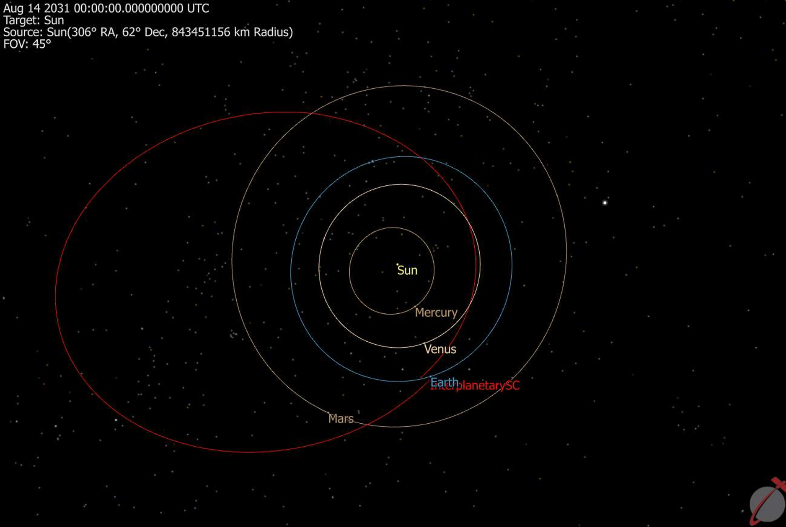

Featured Engineering Projects
Flagship Project & Leadership
KARURA Martian Rover — US Engineering Lead
Directed a cross-functional team of 40 engineers building an autonomous rover for the University Rover Challenge. Overseeing end-to-end integration across mechanical, electrical, and software disciplines.
- Managed system requirements, interface control documents, and verification matrices.
- Spearheaded development of software and communication architectures using ROS2.
Systems Engineering
ROS2
C++
Project Management

Astrodynamics & Mission Design
Mars Dust Sample Return Architecture
Developed a comprehensive mission design and trajectory trade study evaluating interplanetary transfer profiles for a robotic sample return vehicle.
- Modelled Hohmann transfers vs. free-return trajectories using FreeFlyer software.
- Calculated exhaustive launch window energy ($C_3$) variations and $\Delta V$ mass budgets.
FreeFlyer
Orbital Mechanics
Trade Studies

Controls & Software
Orbital Tracker & Dynamic Flight Simulation
Engineered algorithmic pipelines to parse satellite TLE data and track trajectories in real time, serving as a baseline framework for satellite ground station automated targeting.
- Implemented orbital tracking mathematics using native Python libraries (`skyfield`).
- Configured numerical integration frameworks for closed-loop attitude determination control.
Python
SciPy/NumPy
GNC
[Insert Python Tracking/Simulation Error Plot Graphic Here]